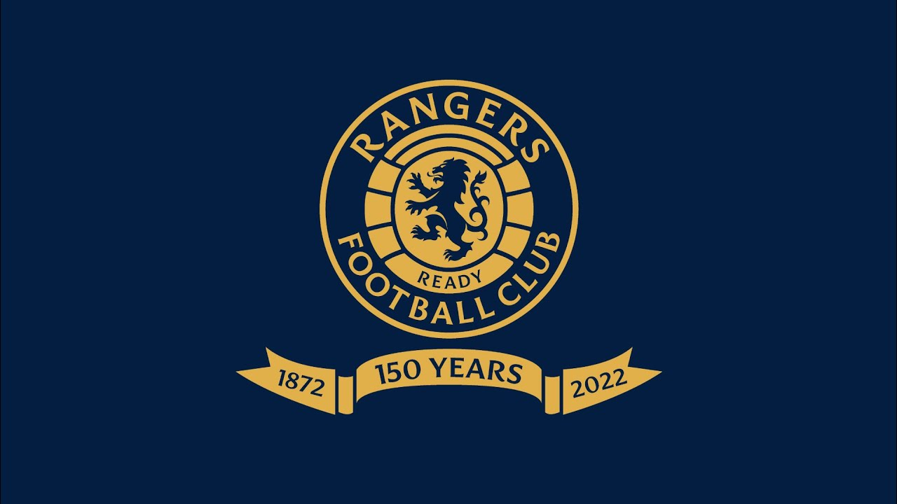
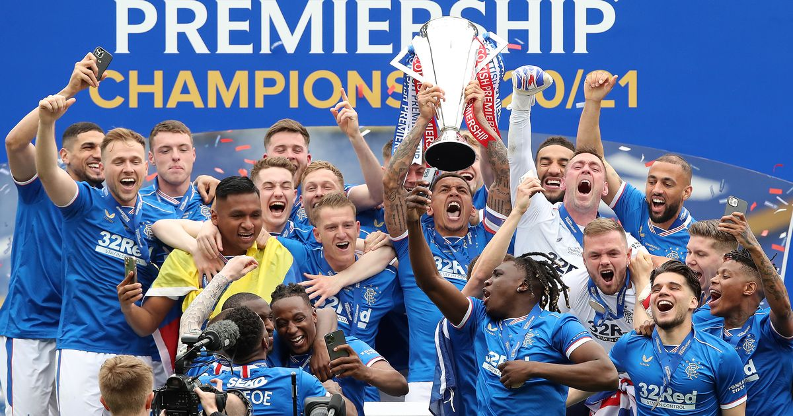
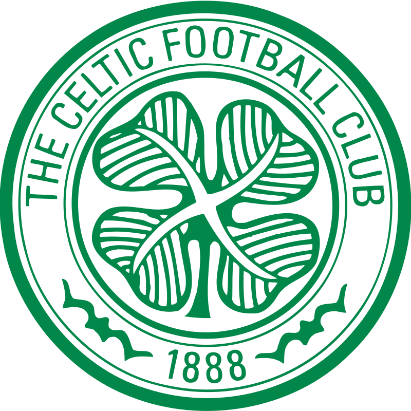
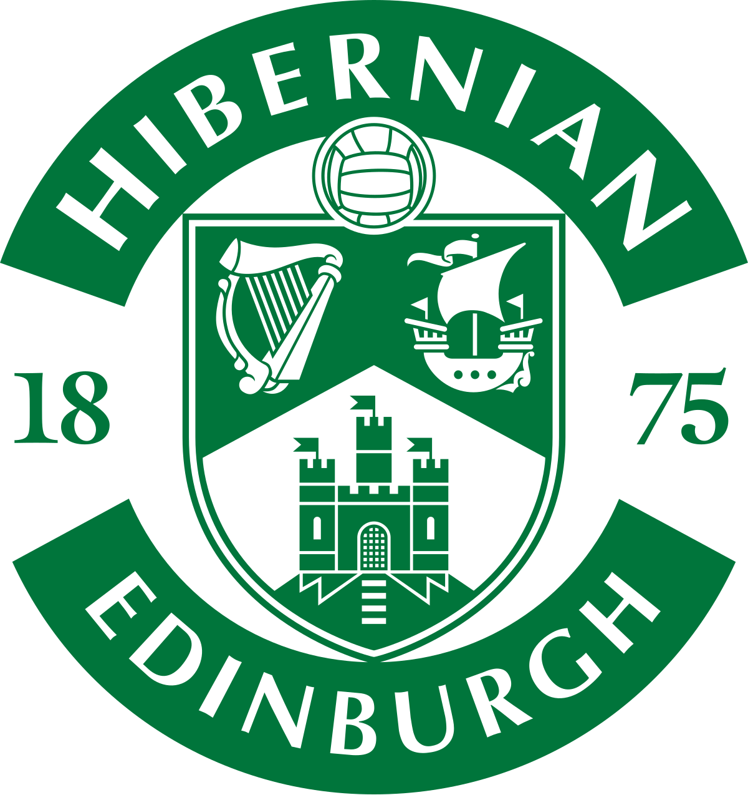
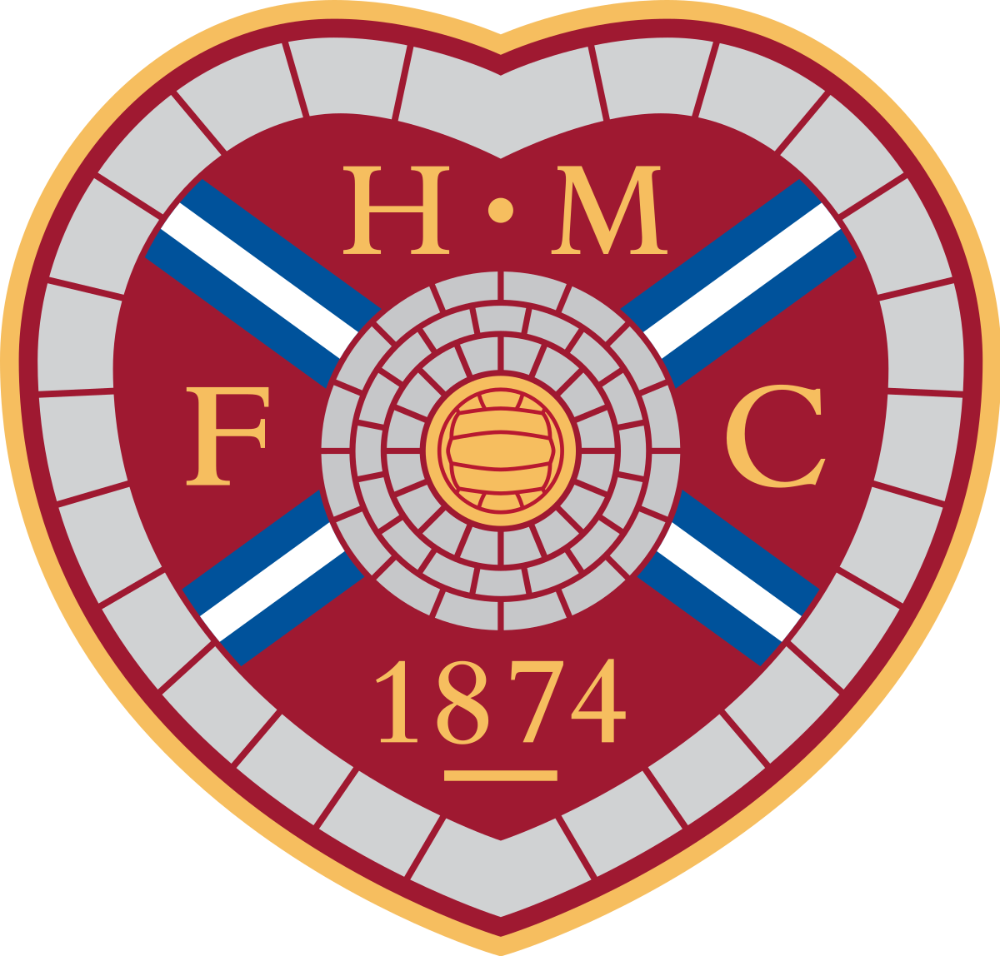
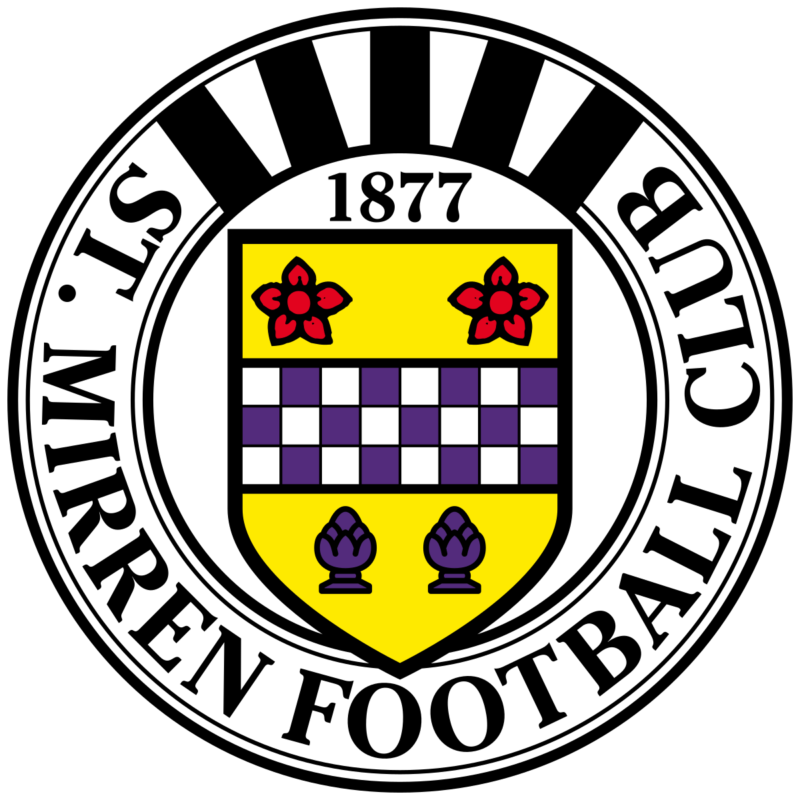

Rangers FC is a football club based in the Ibrox area of Glasgow, Scotland. It was founded by 4 lads who had a dream to form a football team, they had no money not a ball, not even a kit. 55 titles still going strong. The club was originally protestant until the siging of Mo Johnston who is a catholic on 1986. In 2011 they were forced into administration or bankruptcy in 2011 but came back after 5 years in the third league
Accomplishments
- Ended sectarianism within the club in 1986 with the signing of a Catholic named Mo Johnston on 1986
- Came back after administration for four years
- 55 league titles after 10 years without one trophy
- Won the Scottish Cup 34 times
- Domestic treble for 7 different occasions

Roster
- Goalkeeper: McGregor
- Defender: Tavernier, Yilmaz, Helander, Goldson
- Midfielder: Hagi, Davis,Kamara,Sands (On loan from NYCFC)
- Attacker: Morelos, Roofe
Rivalries
- Glasgow Celtic Football Club is rivals with Rangers FC because they have more trophies and accomplishments. Another rivalry reason is because Rangers is Protestant and Celtic is catholic which caused tensions between the two.

- Hibernian FC is rivals with Rangers FC because Hibernian is catholic and Rangers is protestant

- Hearts FC because the fans dislike Rangers

- St Mirren is hated y Rangers Fans because St. Mirren hates everyone

Manager history
- Steven Gerrard was manager from 2018 to 2022
- Graeme Souness was manager from 1986 to 91
- Giovanni Van Bronckhorst is manager from 2022 to present
- Ally McCoist was manager from 11 to 14
The entire contents have been inspired from
Rangers FC official website.